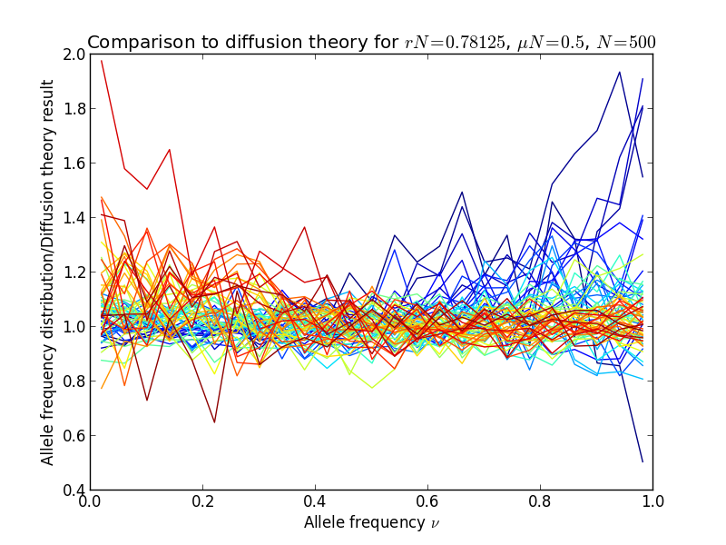
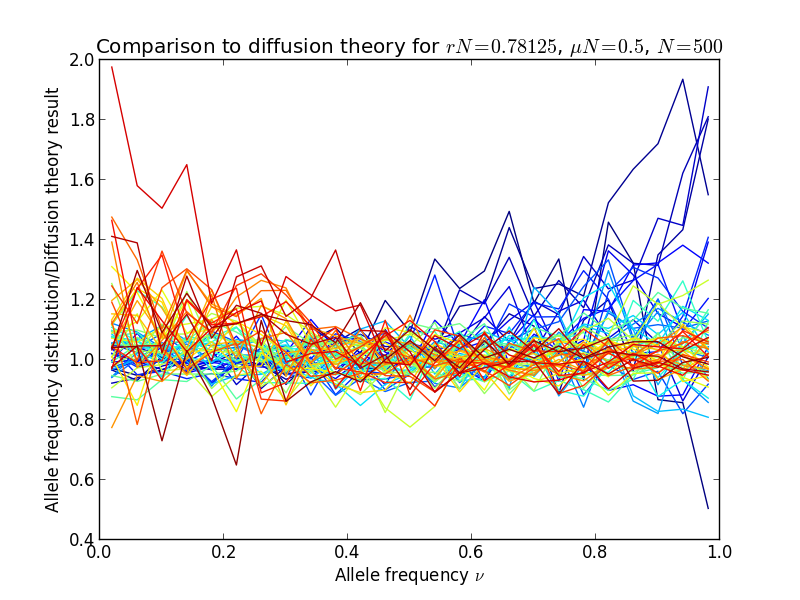

Mutation-selection balance¶
For sites under selection, both genetic drift and selection influence the fate of new alleles. Similar to the example for haploid_lowd, this example shows how to measure the mutation-selection balance in the allele frequency spectra. The full script for this example can be found in the examples folder, in mutation_selection_balance_highd.py.
After loading the modules, we start off by setting parameters and constructing the class:
N = 500 # population size
L = 64 # number of loci
s = np.linspace(-2 ,2, L) / N # additive selection coefficients for L loci, scaled to N
mu = 0.5 / N # mutation rate, scaled to N
r = 50.0 / N / L # recombination rate for each interval between loci
pop = h.haploid_highd(L) # produce an instance of haploid_highd with L loci
We set the additive fitness landscape. Note that the recombination rate is high enough for loci to be unlinked:
pop.set_fitness_additive(0.5 * s)
Note
FFPopSim models fitness landscape in a +/- rather than 0/1 basis, hence the factor 0.5
We then set the mutation and recombination rates:
pop.mutation_rate = mu # mutation rate
pop.recombination_model = h.CROSSOVERS # recombination model
pop.outcrossing_rate = 1 # obligate sexual
pop.crossover_rate = r # crossover rate
We initialize the population in linkage equilibrium with allele frequencies 0.5:
pop.carrying_capacity = N # set the population size
pop.set_allele_frequencies(0.5 * np.ones(L), N)
Now we can start to evolve the population. We first let it equilibrate towards the steady-state:
pop.evolve(10 * N) # run for 10N generations to equilibrate
and we start to record the allele frequencies from now on:
for ii in range(nsamples):
pop.evolve(0.1 * N) # N / 10 generations between successive samples
# get allele frequencies
allele_frequencies[ii,:] = pop.get_allele_frequencies()
Finally, we make a histogram of the allele frequencies and plot it, together with diffusion theory predictions:
for locus in range(L):
y,x = np.histogram(allele_frequencies[:,locus], bins=af_bins, normed='True')
plt.plot(bc, y, color=plt.cm.jet(locus*4))
[...]
plt.plot(bc, y/diffusion_theory, color=plt.cm.jet(locus*4), ls='-')
The result is shown in the following figures, in the left panel, the allele frequency distribution, in the right panel the same normalized by the diffusion theory prediction:
 

Diffusion theory predicts the spectrum accurately over a wide range of fitness coefficients.